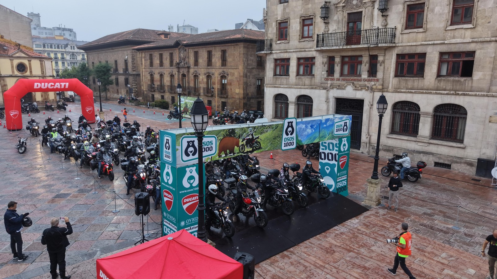
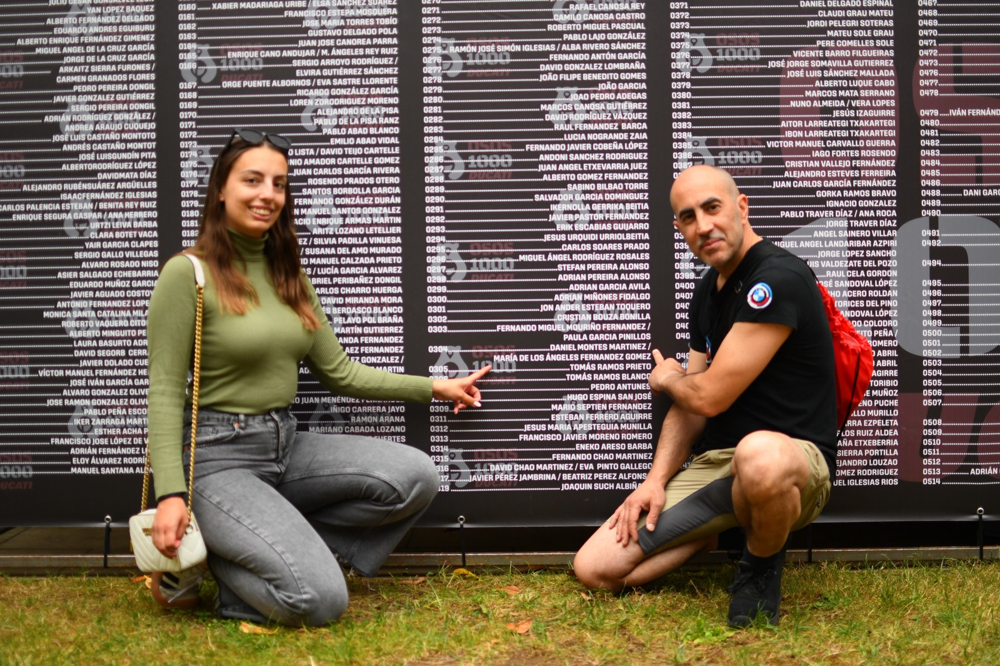

OSOS 1000, the non-competitive motorcycle touring challenge organised by Club Deportivo Básico Osos 1000, returned to Oviedo for its sixth edition on 19-20 June 2026, with event coverage by the Image Media team. Ducati España y Portugal served as the event's official ambassador brand for 2026, with riders gathering at Plaza de la Catedral, the challenge's traditional start and finish point, beneath a branded arch. Organisers reported nearly 900 registered riders for this edition.

Riders chose between three self-guided distances — 1,000km, 500km and 300km — each following a GPS track kept secret until the Monday before the event. Departures from Plaza de la Catedral were staggered by distance on the Saturday morning, with the 1,000km riders setting off first at 6:00, followed by the 500km group at 8:00 and the 300km group at 10:00. Along each route, riders stopped at checkpoints to have an event passport stamped, with some checkpoints kept secret until shortly before the event; the 1,000km route carried a maximum time limit of 20 hours.

The Friday before the ride brought bib collection, a rider briefing and the traditional "Cena Oso" dinner at the Palacio RuaQuince in central Oviedo, where Ducati set up an exhibition space showing its Multistrada V2 S, Multistrada V4 S, Multistrada V4 Rally and DesertX models. Unlike a race, OSOS 1000 carries no results or finishing times — riders navigate their chosen route at their own pace, with the passport stamps serving as proof of passage rather than a timed classification.
The Image Media coverage team at OSOS 1000 comprised Sergio Mendes, Eduardo Castro, Diego and Unai Martínez.